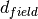

8. Cluster radius estimation¶
Important
This section is outdated.
Todo
Not finished.
We begin by counting the number of RDP points that fall below a given maximum
tolerance interval above . When the number of these points
reaches a fixed value, , the point closest to
is stored as the most probable radius for this iteration.
This process is repeated increasing the tolerance around
which results in another probable radius being stored, not necessarily the
same found in the previous iteration.
The final estimation for  and its associated error comes from
averaging the set of radius values stored this way and taking its standard
deviation, respectively.
and its associated error comes from
averaging the set of radius values stored this way and taking its standard
deviation, respectively.